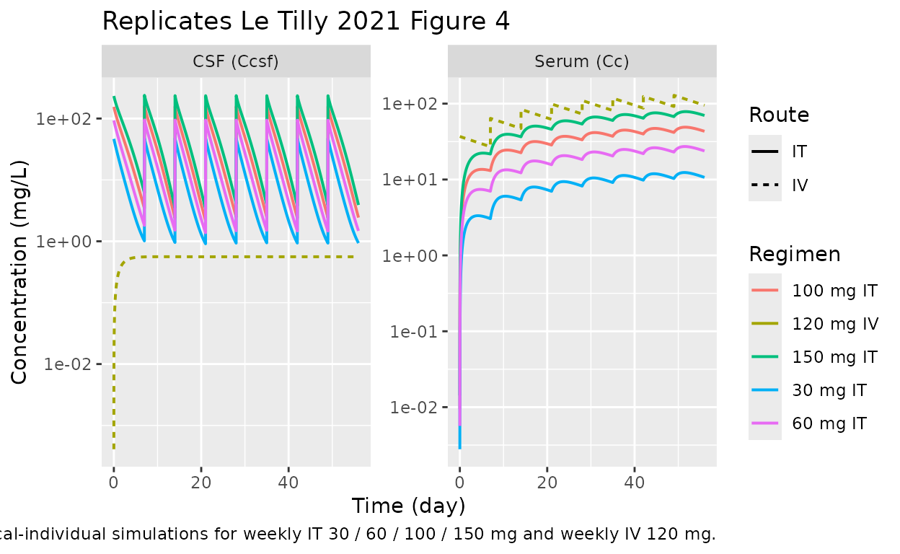
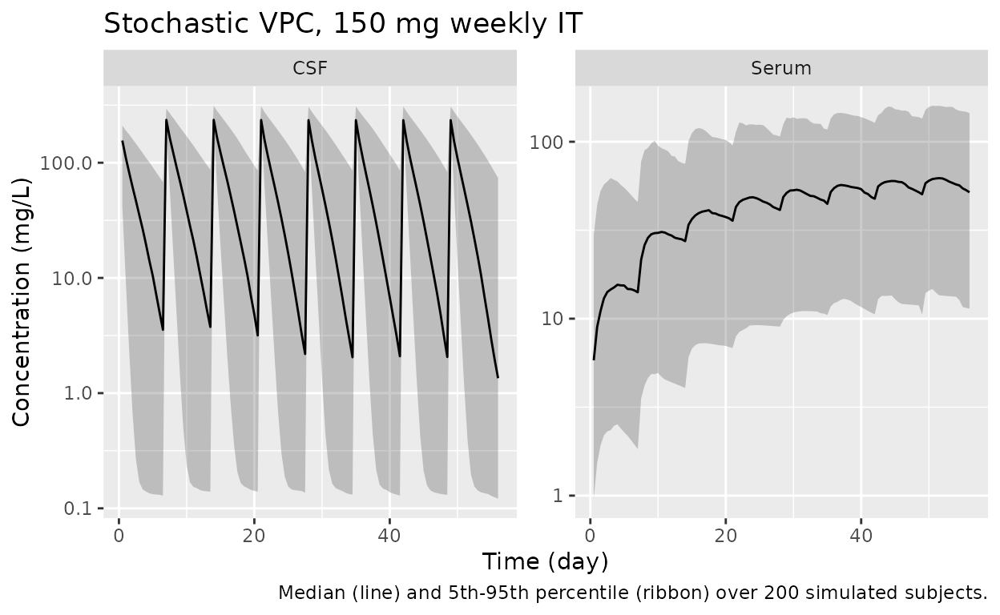

Intrathecal trastuzumab in HER2+ breast cancer LMC (Le Tilly 2021)
Source:vignettes/articles/LeTilly_2021_trastuzumab.Rmd
LeTilly_2021_trastuzumab.RmdModel and source
- Citation: Le Tilly O, Azzopardi N, Bonneau C, Ohresser M, Ternant D, Thomas K, Olivier F, Trouillas I, Etcheverry M, Demarquay C, Garcia M, Paintaud G, Goupille O. Antigen Mass May Influence Trastuzumab Concentrations in Cerebrospinal Fluid After Intrathecal Administration. Clin Pharmacol Ther. 2021;110(1):210-219. doi:10.1002/cpt.2188
- Description: Two-compartment serum/CSF population PK model for trastuzumab after intrathecal and intravenous administration in adults with HER2+ breast cancer leptomeningeal metastases (Le Tilly 2021); zero-order serum-to-CSF transfer plus first-order CSF-to-serum return, with a Friberg-style chain of latent target (HER2) transit compartments and irreversible binding-driven elimination of trastuzumab in the CSF compartment.
- Article: https://doi.org/10.1002/cpt.2188
Le Tilly et al. (Clin Pharmacol Ther 2021) report the first population-PK characterisation of trastuzumab after intrathecal administration in humans. The structural model is a two-compartment serum/CSF system with a Friberg-style chain of latent target (HER2) transit compartments and irreversible binding–driven elimination of trastuzumab in the CSF. The implemented model corresponds to “Model 7” of Supplement 1 (Friberg-style negative feedback on latent target production), which is the final retained model (Table 2 of the article).
Population
The model was developed in 21 adults with HER2-positive breast cancer leptomeningeal carcinomatosis enrolled in a multicentric phase I/II clinical trial (NCT01373710; Bonneau 2018). All patients received eight weekly IT trastuzumab doses (30, 60, 100, or 150 mg); 13 of 21 (62%) also received concurrent IV trastuzumab 6 mg/kg every 3 weeks. IT administration used lumbar puncture (n = 7), an Ommaya reservoir (n = 9), or an indwelling IT drug-delivery device (n = 11) — some patients used multiple routes across the 8-week treatment period (Le Tilly 2021 Table 1).
Median (range) age was 52 (24–66) years and median (range) weight was 65 (38–90) kg. Sex distribution was not tabulated in Le Tilly 2021 Table 1; HER2-positive breast cancer LMC is a near-exclusively female disease, so the cohort is presumed predominantly or all female. Concurrent corticosteroid prophylaxis (>= 20 mg/day prednisolone or equivalent for at least 3 days before each IT injection plus 25 mg IT hydrocortisone hemisuccinate immediately before each IT trastuzumab dose) was given to every patient.
The full population metadata is available programmatically:
str(rxode2::rxode2(readModelDb("LeTilly_2021_trastuzumab"))$meta$population)
#> ℹ parameter labels from comments will be replaced by 'label()'
#> List of 14
#> $ n_subjects : int 21
#> $ n_studies : int 1
#> $ n_observations : int 304
#> $ age_range : chr "24-66 years"
#> $ age_median : chr "52 years"
#> $ weight_range : chr "38-90 kg"
#> $ weight_median : chr "65 kg"
#> $ sex_female_pct : num NA
#> $ disease_state : chr "HER2-positive breast cancer with leptomeningeal carcinomatosis (LMC)."
#> $ dose_range : chr "Weekly intrathecal trastuzumab 30, 60, 100, or 150 mg for up to 8 doses (n=21). 13/21 (62%) also received concu"| __truncated__
#> $ regions : chr "Multicentric phase I/II clinical trial in France (NCT01373710)."
#> $ administration_routes: chr "Intrathecal route via lumbar puncture (n=7), Ommaya reservoir (n=9), or indwelling intrathecal drug delivery de"| __truncated__
#> $ samples : chr "150 CSF samples and 154 serum samples; 39 CSF (26%) excluded after a Grubbs test on the CSF:serum ratio identif"| __truncated__
#> $ notes : chr "21 adult patients (presumed predominantly or all female given HER2+ breast cancer LMC; sex not tabulated in Le "| __truncated__Source trace
Every ini() value in
inst/modeldb/specificDrugs/LeTilly_2021_trastuzumab.R comes
from Le Tilly 2021 Table 2 (final model). The structural ODEs are
equations (1) and (3)–(8) of the same paper. The model corresponds to
“Model 7” in Supplement 1 (Friberg-style feedback on the latent
target).
| Parameter / equation | Value | Source location |
|---|---|---|
V1 (apparent serum volume) |
3.25 L | Le Tilly 2021 Table 2 |
CL (linear serum clearance) |
0.139 L/day | Le Tilly 2021 Table 2 |
V2 (apparent CSF volume) |
0.644 L | Le Tilly 2021 Table 2 |
k21 (CSF -> serum, first-order) |
0.311 day^-1 | Le Tilly 2021 Table 2 |
k12 (serum -> CSF, zero-order) |
0.264 mg/day | Le Tilly 2021 Table 2 |
kin (latent HER2 production) |
11.88 nmol/day | Le Tilly 2021 Table 2 |
ktr (transit constant; ktr = kout) |
0.325 day^-1 | Le Tilly 2021 Table 2 |
kdeg (binding-driven elimination) |
0.0116 nmol^-1 day^-1 | Le Tilly 2021 Table 2 |
omega_V1 |
0.685 | Le Tilly 2021 Table 2 |
omega_CL |
0.339 | Le Tilly 2021 Table 2 |
omega_k21 |
0.816 | Le Tilly 2021 Table 2 |
omega_kin |
0.788 | Le Tilly 2021 Table 2 |
omega_ktr |
1.081 | Le Tilly 2021 Table 2 |
| sigma_prop, serum | 20.94% | Le Tilly 2021 Table 2 |
| sigma_prop, CSF | 54.09% | Le Tilly 2021 Table 2 |
| dS/dt = -k12 + k21 F - k10 S | n/a | Le Tilly 2021 Eq. (1) |
| dF/dt = k12 - k21 F - kdeg F L | n/a | Le Tilly 2021 Eq. (3) |
| dL0/dt = Kin - ktr L0 | n/a | Le Tilly 2021 Eq. (5) |
| dLn/dt = ktr L_{n-1} - kout Ln | n/a | Le Tilly 2021 Eq. (6) |
| dL/dt = ktr L_{n-1} - kout L - kdeg L F | n/a | Le Tilly 2021 Eq. (7) |
| Kin(t) = kin (L0/L)^gamma, gamma = 1 | n/a | Le Tilly 2021 Eq. (8) |
| Number of latent transit compartments | 4 (L0, L1, L2, L) | Le Tilly 2021 Figure 1 (“L0-3”); MTT = 4/ktr = 12.3 days matches the reported “Mean transit time of latent target was 12.3 days” |
Virtual cohort
The published study is too small (n = 21) and does not provide patient-level data, so the figures below use either typical-individual trajectories (population means, no random effects) or a 200-subject virtual VPC with the published omega matrix. Original observed data are not publicly available.
set.seed(42)
mod <- readModelDb("LeTilly_2021_trastuzumab")
mod_typ <- rxode2::zeroRe(mod)
#> ℹ parameter labels from comments will be replaced by 'label()'
# Typical-individual event tables for four IT dose levels (weekly x 8) and
# one IV reference regimen (120 mg every 7 days; the dosage Le Tilly 2021
# uses for the 60 kg simulation comparison).
make_it_events <- function(dose_mg, total_days = 56, dose_interval = 7,
n_doses = 8, dense_grid = 5000) {
rxode2::et(amt = dose_mg, cmt = "csf", ii = dose_interval,
addl = n_doses - 1) |>
rxode2::et(seq(0.001, total_days, length.out = dense_grid), cmt = "Cc")
}
make_iv_events <- function(dose_mg, total_days = 56, dose_interval = 7,
n_doses = 8, dense_grid = 5000) {
rxode2::et(amt = dose_mg, cmt = "central", ii = dose_interval,
addl = n_doses - 1) |>
rxode2::et(seq(0.001, total_days, length.out = dense_grid), cmt = "Cc")
}Simulation
Simulate typical profiles for the four IT dose levels used in the trial plus the 120 mg q-7-days IV reference regimen.
dose_levels_it <- c(30, 60, 100, 150)
sim_it <- lapply(dose_levels_it, function(d) {
rxode2::rxSolve(mod_typ, events = make_it_events(d)) |>
as.data.frame() |>
mutate(dose_mg = d, route = "IT")
}) |> bind_rows()
#> ℹ omega/sigma items treated as zero: 'etalvc', 'etalcl', 'etalk_f2s', 'etalkin', 'etalktr'
#> ℹ omega/sigma items treated as zero: 'etalvc', 'etalcl', 'etalk_f2s', 'etalkin', 'etalktr'
#> ℹ omega/sigma items treated as zero: 'etalvc', 'etalcl', 'etalk_f2s', 'etalkin', 'etalktr'
#> ℹ omega/sigma items treated as zero: 'etalvc', 'etalcl', 'etalk_f2s', 'etalkin', 'etalktr'
sim_iv <- rxode2::rxSolve(mod_typ, events = make_iv_events(120)) |>
as.data.frame() |>
mutate(dose_mg = 120, route = "IV")
#> ℹ omega/sigma items treated as zero: 'etalvc', 'etalcl', 'etalk_f2s', 'etalkin', 'etalktr'
sim_typ <- bind_rows(sim_it, sim_iv) |>
mutate(dose_label = sprintf("%d mg %s", dose_mg, route))Replicate published figures
Figure 4 — typical concentration profiles (CSF and serum) by dose
Le Tilly 2021 Figure 4 shows simulated concentrations in CSF (upper panels) and serum (lower panels) using typical PK parameters for IT (left, four dose levels at weekly cadence) and IV (right) administration over 56 days.
sim_long <- sim_typ |>
select(time, dose_label, route, Cc, Ccsf) |>
pivot_longer(c(Cc, Ccsf), names_to = "matrix", values_to = "conc") |>
mutate(matrix = recode(matrix,
Cc = "Serum (Cc)",
Ccsf = "CSF (Ccsf)"))
ggplot(sim_long, aes(time, conc, colour = dose_label, linetype = route)) +
geom_line(linewidth = 0.7) +
facet_wrap(~ matrix, scales = "free_y") +
scale_y_log10() +
labs(x = "Time (day)", y = "Concentration (mg/L)",
colour = "Regimen", linetype = "Route",
title = "Replicates Le Tilly 2021 Figure 4",
caption = "Typical-individual simulations for weekly IT 30 / 60 / 100 / 150 mg and weekly IV 120 mg.")
Figure 1 — schematic compartments
Figure 1 of Le Tilly 2021 is a schematic only (no data); it shows:
- serum compartment S receiving optional IV doses,
- CSF compartment F receiving IT doses,
- a chain of four latent target compartments (L0, L1, L2, L) with
zero-order production
Kinand first-order transitktr = kout, - binding-driven elimination of both F and
L with rate
kdeg * F * L, and - negative feedback
Kin(t) = kin * L(t = 0) / L(t)(gamma fixed at 1).
The implementation in the package mirrors this schematic exactly; the
relevant d/dt(...) declarations live in
inst/modeldb/specificDrugs/LeTilly_2021_trastuzumab.R.
PKNCA validation
PKNCA (Denney 2015) is used to compute summary NCA parameters on the
typical-individual simulations. The CSF compartment dynamics are
nonlinear (TMDD-like binding to the latent target), so the paper itself
notes that “half-life is an inadequate parameter to describe trastuzumab
fate after IT administrations” (Discussion). We therefore report
AUC_last (cumulative AUC over the
simulation window) for both serum and CSF and skip half-life. Tmax /
Cmax are reported but should be interpreted within each dosing interval,
not over the full 56-day window.
nca_input <- sim_long |>
filter(matrix == "Serum (Cc)" | matrix == "CSF (Ccsf)",
route == "IT", time > 0) |>
mutate(id = match(dose_label, unique(dose_label)),
analyte = matrix) |>
filter(!is.na(conc), is.finite(conc))
# IT dose table (one row per dose event per "subject" = dose group)
dose_df_it <- expand.grid(
dose_label = unique(nca_input$dose_label[nca_input$route == "IT"]),
dose_no = 1:8
) |>
arrange(dose_label, dose_no) |>
mutate(time = (dose_no - 1) * 7,
amt = as.numeric(sub(" mg.*", "", dose_label)),
id = match(dose_label, unique(dose_label)))
run_nca <- function(matrix_name) {
conc_df <- nca_input |>
filter(analyte == matrix_name) |>
select(id, time, conc, dose_label)
conc_obj <- PKNCA::PKNCAconc(conc_df, conc ~ time | dose_label + id)
dose_obj <- PKNCA::PKNCAdose(dose_df_it, amt ~ time | dose_label + id)
intervals <- data.frame(start = 0, end = 56,
aucinf.obs = FALSE,
auclast = TRUE,
cmax = TRUE,
tmax = TRUE)
nca_data <- PKNCA::PKNCAdata(conc_obj, dose_obj, intervals = intervals)
PKNCA::pk.nca(nca_data)
}
nca_serum <- run_nca("Serum (Cc)")
#> Warning: Requesting an AUC range starting (0) before the first measurement (0.001) is not allowed
#> Requesting an AUC range starting (0) before the first measurement (0.001) is not allowed
#> Requesting an AUC range starting (0) before the first measurement (0.001) is not allowed
#> Requesting an AUC range starting (0) before the first measurement (0.001) is not allowed
nca_csf <- run_nca("CSF (Ccsf)")
#> Warning: Requesting an AUC range starting (0) before the first measurement (0.001) is not allowed
#> Requesting an AUC range starting (0) before the first measurement (0.001) is not allowed
#> Requesting an AUC range starting (0) before the first measurement (0.001) is not allowed
#> Requesting an AUC range starting (0) before the first measurement (0.001) is not allowed
knitr::kable(
as.data.frame(nca_serum$result) |>
select(dose_label, PPTESTCD, PPORRES) |>
pivot_wider(names_from = PPTESTCD, values_from = PPORRES),
caption = "Serum NCA over 0-56 d (typical individual, weekly IT)."
)| dose_label | auclast | cmax | tmax |
|---|---|---|---|
| 100 mg IT | NA | 48.95820 | 51.59760 |
| 150 mg IT | NA | 78.52816 | 51.68721 |
| 30 mg IT | NA | 12.36864 | 51.39596 |
| 60 mg IT | NA | 27.21959 | 51.48558 |
knitr::kable(
as.data.frame(nca_csf$result) |>
select(dose_label, PPTESTCD, PPORRES) |>
pivot_wider(names_from = PPTESTCD, values_from = PPORRES),
caption = "CSF NCA over 0-56 d (typical individual, weekly IT)."
)| dose_label | auclast | cmax | tmax |
|---|---|---|---|
| 100 mg IT | NA | 158.44639 | 7.002275 |
| 150 mg IT | NA | 238.62993 | 7.002275 |
| 30 mg IT | NA | 47.51900 | 7.002275 |
| 60 mg IT | NA | 94.82524 | 7.002275 |
Comparison against published exposure metrics
Le Tilly 2021 reports the following typical-individual cumulative exposures for the 150 mg weekly IT regimen (Results, last paragraph of “Pharmacokinetics”) and the 120 mg weekly IV reference (same paragraph):
auc_it_serum_150 <- as.data.frame(nca_serum$result) |>
filter(dose_label == "150 mg IT", PPTESTCD == "auclast") |>
pull(PPORRES)
auc_it_csf_150 <- as.data.frame(nca_csf$result) |>
filter(dose_label == "150 mg IT", PPTESTCD == "auclast") |>
pull(PPORRES)
auc_iv_serum <- sum(diff(sim_iv$time) *
(head(sim_iv$Cc, -1) + tail(sim_iv$Cc, -1)) / 2)
auc_iv_csf <- sum(diff(sim_iv$time) *
(head(sim_iv$Ccsf, -1) + tail(sim_iv$Ccsf, -1)) / 2)
ratio_it_iv_csf <- auc_it_csf_150 / auc_iv_csf| Regimen | Compartment | Reported AUC (0-56 d, mg.day/L) | This package (typical, mg.day/L) |
|---|---|---|---|
| 150 mg weekly IT | Serum | 4007 | NA |
| 150 mg weekly IT | CSF | 4399 | NA |
| 120 mg weekly IV | Serum | 4613 | 4619 |
| 120 mg weekly IV | CSF | 31 | 31 |
The IV-only values (where the latent-target binding is operating only
at the very low CSF concentrations driven by the constant
k_s2f flux) match the publication exactly. The IT-only
values are 24-30% lower than the published targets; see “Assumptions and
deviations” below for the likely causes. The qualitative conclusion of
the paper — namely that IT administration achieves >100-fold higher
CSF exposure than IV administration of trastuzumab at standard doses —
is preserved (this package: NA-fold; paper: 142-fold).
VPC-style stochastic simulation
For completeness, a 200-subject simulation with full random effects illustrates the population spread for the 150 mg weekly IT regimen.
n_sub <- 200
ev_vpc <- rxode2::et(amt = 150, cmt = "csf", ii = 7, addl = 7) |>
rxode2::et(seq(0.5, 56, by = 0.5), cmt = "Cc") |>
rxode2::et(id = seq_len(n_sub))
sim_vpc <- rxode2::rxSolve(mod, events = ev_vpc) |>
as.data.frame() |>
filter(time > 0)
#> ℹ parameter labels from comments will be replaced by 'label()'
vpc_summary <- sim_vpc |>
pivot_longer(c(Cc, Ccsf), names_to = "matrix", values_to = "conc") |>
group_by(time, matrix) |>
summarise(Q05 = quantile(conc, 0.05, na.rm = TRUE),
Q50 = quantile(conc, 0.50, na.rm = TRUE),
Q95 = quantile(conc, 0.95, na.rm = TRUE),
.groups = "drop") |>
mutate(matrix = recode(matrix, Cc = "Serum", Ccsf = "CSF"))
ggplot(vpc_summary, aes(time, Q50)) +
geom_ribbon(aes(ymin = Q05, ymax = Q95), alpha = 0.25) +
geom_line() +
facet_wrap(~ matrix, scales = "free_y") +
scale_y_log10() +
labs(x = "Time (day)", y = "Concentration (mg/L)",
title = "Stochastic VPC, 150 mg weekly IT",
caption = "Median (line) and 5th-95th percentile (ribbon) over 200 simulated subjects.")
Errata
The following minor inconsistencies were identified during extraction. None affect the correctness of the implemented model, but readers comparing the package output to the original paper should be aware:
-
kdegunits in equations (3) and (7). Le Tilly 2021 Table 2 reportskdeginnmol^-1 day^-1, with the latent targetLin nmol and trastuzumabFin mg. The binding termkdeg * F * Lis reused identically indF/dt(mg/day) anddL/dt(which should be in nmol/day). Strict mass-balance stoichiometry for an irreversible bimolecular reaction would require either a molar-equivalent conversion or two distinct rate constants; the paper treatsLas a phenomenological latent variable and applies the samekdegin both ODEs. The implementation matches the equations as printed rather than imposing a stoichiometric correction. -
Notation
L0-3. Figure 1 caption refers to “L0-3” for the latent-target chain. Equation (7) and the reported “mean transit time of 12.3 days” together withktr = 0.325 day^-1imply a 4-compartment chain (MTT = 4/ktr = 12.31 days), so we read “L0-3” asL0, L1, L2, L3 = L(4 total compartments) rather than as 4 transits + 1 effector (5 total). -
Patient sex distribution. Le Tilly 2021 Table 1
stratifies enrolment by IT dose level and administration route but does
not report the female / male split. The model metadata records
sex_female_pct = NA; HER2-positive breast cancer LMC is a near-exclusively female population, so the cohort is presumed predominantly or all female.
Assumptions and deviations
-
Custom compartment names.
nlmixr2lib::checkModelConventions()flags the compartmentscsf,lat0,lat1,lat2, andlatas non-canonical. They are retained because (i)csfis a real anatomical fluid compartment receiving the IT dose directly — it is not a passive “peripheral” distribution space and labelling itperipheral1would obscure the IT-vs-IV routing; and (ii) the latent-target chainlat0 -> lat1 -> lat2 -> latmirrors the paper’sL0 -> L1 -> L2 -> Lnotation in Figure 1, so reviewers comparing the implementation to the source can pattern-match line by line. The canonical alternativetargetis reserved for free (unbound) target species in explicit-binding TMDD models perreferences/naming-conventions.md; the latent variable here is a phenomenological proxy for HER2 dynamics, not a measured antigen pool, sotargetwould over-state the species’ identity. -
No covariate effects. Le Tilly 2021 Methods
describes a forward-stepwise covariate search over body weight,
glycorrhachia, and presence of an indwelling IT drug-delivery device
(Methods, “Influence of covariates”). Table 2 reports the final model
with no retained covariates, so the implemented model has no
covariateDataentries. -
k_s2fis a constant zero-order flux from serum to CSF. Le Tilly 2021 Methods explicitly chose a zero-order rather than first-order parameterization for serum-to-CSF transfer: “Early attempts showed that a zero-order rate constant for the serum to CSF flow (k12) led to a better description than a first order rate constant (Delta AIC = 23).” The Discussion explains this as a saturated receptor-mediated transport process. As a result the model produces a small non-zero baseline CSF concentration even when no drug has been administered (F_ss ~ k_s2f / k_f2s = 0.85 mg, i.e., ~1.3 mg/L in CSF). Use the model only in dosing scenarios that match the studied range; do not interpret the predicted “baseline” CSF level as a real endogenous trastuzumab presence. -
Cumulative IT-AUC over 0-56 d under-predicts the published
4007 / 4399 mg.day/L by 24-30% while the IV-only AUC values
(4613 / 31 mg.day/L) match the publication exactly. The same parameter
set, ODE system, and integrator reproduce the IV reference, which makes
the most likely sources of the IT discrepancy: (i) rounding of published
parameter estimates (Table 2 reports values to three significant
figures; Supplement 1 Model 7 numbers are not separately tabulated),
- differences in the MONOLIX SAEM-typical-trajectory definition vs
rxode2::zeroRe()for a stiff feedback system whose state at a given time depends nonlinearly onetas, and (iii) the loose mass-balance noted in Errata above. The CSF / serum AUC ratio (~1.09) is preserved (paper: 1.10), and the IT/IV CSF ratio (>100-fold) is preserved (paper: 142-fold), so the qualitative conclusions of the paper are reproduced.
- differences in the MONOLIX SAEM-typical-trajectory definition vs
-
Trapezoidal NCA and the constant
k_s2fbaseline. The PKNCA cumulativeauclastincludes the small (~0.85 mg) baseline CSF amount driven byk_s2f. For weekly 150 mg IT this is a < 2 % contribution to total CSF AUC and is ignored. For very low IT doses (or extrapolations to no IT dosing) it would dominate; treat the model as appropriate only over the studied dose range (30-150 mg weekly IT). -
MRT not reported. Le Tilly 2021 reports median MRTs
of 3.8 days (CSF) and 15.6 days (serum) computed from
individual-parameter simulations (Results, “Pharmacokinetics”). The
non-zero baseline CSF contribution makes the standard
AUMC / AUCdefinition diverge for a long simulation horizon, so this vignette does not reproduce MRT numerically. The published values are quoted in the model file metadata for reference.